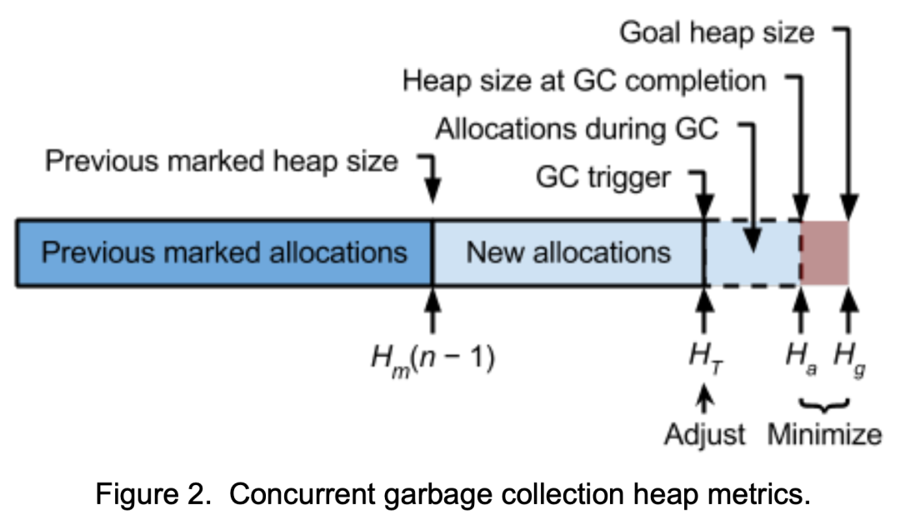

Go 1.5 并行垃圾回收步调【译】
阅读次数:
Introduction
Prior to Go 1.5, Go has used a parallel stop-the-world (STW) collector. While STW collection has many downsides, it does at least have predictable and controllable heap growth behavior. The sole tuning knob for the STW collector was “GOGC”, the relative heap growth between collections. The default setting, 100%, triggered garbage collection every time the heap size doubled over the live heap size as of the previous collection, as shown in figure 1.
在 Go 1.5 之前，Go 使用了并行stop-the-world (STW)回收器。虽然STW回收有很多缺点，但它至少具有可预测且可控的堆增长行为。STW回收器的唯一调整旋钮是“GOGC”，即两次回收之间的相对堆增长。默认设置100% 会在每次堆大小比上次回收时的活动堆大小增加一倍时触发垃圾收器，如图1所示。
Go 1.5 introduces a concurrent collector. This has many advantages over STW collection, but it makes heap growth harder to control because the application can allocate memory while the garbage collector is running. To achieve the same heap growth limit the runtime must start garbage collection earlier, but how much earlier depends on many variables, many of which cannot be predicted. Start the collector too early, and the application will perform too many garbage collections, wasting CPU resources. Start the collector too late, and the application will exceed the desired maximum heap growth. Achieving the right balance without sacrificing concurrency requires carefully pacing the garbage collector.
Go 1.5 引入了并发回收器。与STW回收相比，它有很多优点，但它使堆增长更难以控制，因为应用程序可以在垃圾回收器运行时分配内存。为了达到相同的堆增长限制，运行时必须提前开始垃圾回收，但是提前多少取决于许多变量，并且其中许多变量是无法预测的。过早启动收集器，应用程序将执行过多的垃圾回收，浪费 CPU 资源。太晚启动回收器，应用程序将超过所需的最大堆增长。要在不牺牲并发性的情况下实现正确的平衡，需要仔细调整垃圾回收器的步调。
This document proposes a mechanism to perform this pacing by adjusting the GC trigger point and scheduling the CPU to achieve the desired heap size and CPU utilization bounds.
本文档提出了一种通过调整GC触发点和调度CPU来执行此步调的机制，以实现所需的堆大小和CPU利用率界限。
Optimization goals
GC pacing aims to optimize along two dimensions: heap growth, and CPU utilized by the garbage collector.
GC 步调旨在沿着两个维度进行优化：堆增长和用于垃圾回收的CPU利用率。

A Go user expresses the desired maximum heap growth by setting GOGC to percent heap growth from one garbage collection cycle to the next. Let \(h_g = GOGC / 100\) denote this goal growth ratio.That is, if H_m(n) is the total size of marked objects following the nth GC cycle, then the goal heap size is \(H_g(n) = H_m(n − 1) ∙ (1 + h_g)\). Throughout this document, we will use the convention that \(H_□(n) = H_m(n − 1) ∙ (1 + h_□(n))\) is the absolute heap size for the heap growth ratio \(h_□\). Pacing must optimize for each cycle to terminate when the actual heap growth at the end of the cycle (prior to sweeping) \(h_a(n)\) is as close as possible to the GOGC goal, as shown in figure 2.
Go 用户通过将GOGC设置为从一个垃圾回收周期到下一个垃圾回收周期的堆增长百分比来表达所需的最大堆增长。令\(h_g = GOGC / 100\)表示目标增长比率。 也就是说，如果H_m(n)是第n个GC周期后标记对象的总大小，则目标堆大小为 \(H_g(n) = H_m(n − 1) ∙ (1 + h_g)\) 在本文档中，我们将使用以下约定： \(H_□(n) = H_m(n − 1) ∙ (1 + h_□(n))\)是堆增长比率 \(h_□\)的绝对堆大小。 步调必须针对每个周期进行优化，以便在周期结束时（清理之前）的实际堆增长 \(h_a(n)\) 尽可能接近GOGC目标时终止，如图 2 所示。
Goal 1. Minimize \(|h_g − h_a(n)|\) .
A cycle may under or overshoot \(h_g\) , its goal heap growth. Pacing must minimize heap growth overshoot to avoid consuming more memory than desired. At the same time, pacing must minimize heap growth undershoot because regularly undershooting means GC is running too often, consuming more total CPU than intended, and slowing down the overall application.
一个周期可能低于或超过其目标堆增长 \(h_g\)。步调必须最大限度地减少堆增长过度，以避免消耗比预期更多的内存。 同时，步调必须最大限度地减少堆增长过少，因为经常下冲意味着GC运行过于频繁，消耗的CPU总量超出预期，并减慢了整个应用程序的速度。
In a STW collector, this goal is achieved by simply running the collector when allocated heap growth reaches \(h_g\) . In a concurrent collector, the runtime must trigger garbage collection before this point. \(h_T(n)\) denotes this trigger growth ratio,which the runtime will adjust to achieve its pacing goals.
在STW回收器中，只需在分配的堆增长达到\(h_g\)时运行回收器即可实现此目标。在并发回收器中，运行时必须在此之前触发垃圾回收。\(h_T(n)\)表示触发增长比率，运行时将调整该比率以实现其步调目标。
Pacing must also optimize scheduling to achieve the desired garbage collector CPU utilization. CPU utilization by the garbage collector during concurrent phases should be as close to 25% of GOMAXPROCS as possible. This includes time in the background collector and assists from the mutator, but not time in write barriers (simply because the accounting would increase write barrier overhead) or secondary effects like increased cache misses. Of course, if the mutator is using less than 75% CPU, the garbage collector will run in the remaining time; this idle utilization does not count against the GC CPU budget. Let \(u_g= 0.25\) denote this goal utilization and \(u_a(n)\) be the actual average CPU utilization achieved by thenth GC cycle (not including idle utilization).
步调还必须优化调度，以实现所需的垃圾回收器CPU利用率。并发阶段垃圾回收器的CPU利用率应尽可能接近 GOMAXPROCS 的25%。这包括后台运行回收器和mutator的协助的CPU时间，但不包括写屏障中的时间（仅仅因为计算会增加写屏障开销）或次要影响（例如增加缓存未命中）。 当然，如果mutator使用的CPU低于75%，则垃圾回收器将在剩余时间内运行；此空闲利用率不计入GC CPU预算。令 \(u_g= 0.25\) 表示该目标利用率，\(u_a(n)\) 为第n个GC周期实现的实际平均CPU利用率（不包括空闲利用率）。
注：mutator是指程序的执行线程，也就是负责执行应用程序逻辑的线程。mutator assists是指当垃圾回收器发现mutator正在执行特定的操作，比如正在分配内存或执行系统调用等，它会请求mutator提供一些额外的帮助，以便更高效地进行垃圾回收。mutator assists可能包括协助标记对象、处理根对象、协助清理等操作。
Goal 2. Minimize \(|u_g − u_a(n)|\).
As with heap size, a cycle may under or overutilize the CPU. 25% maximum utilization is a stated goal for the Go 1.5 collector, so pacing should minimize CPU overutilization. However, this is a soft limit and necessarily so: if the runtime were to strictly enforce a 25% utilization limit, a rapidly allocating mutator can cause arbitrary heap overshoot. Pacing should also minimize CPU underutilization because using as much of the 25% budget as possible minimizes the duration of the concurrent mark phase. Since the concurrent mark phase enables write barriers, this in turn minimizes the impact of write barrier overhead on application performance. It also reduces the amount of floating garbage,objects that are kept by the collector because they were reachable at some point during GC but are not reachable at GC termination. The runtime will adjust how it schedules the CPU between mutators and background garbage collection to achieve the pacing goals.
与堆大小一样，一个周期可能会导致CPU利用率不足或过度。25%的最大利用率是 Go 1.5 回收器的既定目标，因此步调应最大限度地降低CPU过度利用率。然而，这是一个软限制并且应当如此，否则：如果运行时严格执行25%的利用率限制，则一个快速分配的mutator可能会导致任意堆超调。步调还应该最大限度地减少CPU利用率不足的情况，因为尽可能多地使用25%的预算可以最大限度地减少并发标记阶段的持续时间。由于并发标记阶段启用了写屏障，这反过来又最大限度地减少了写屏障开销对应用程序性能的影响。它还减少了浮动垃圾的数量，这些对象是由回收器持有的，因为它们在GC期间的某个时刻可以访问，但在GC终止时无法访问。运行时将调整其在mutators和后台垃圾回收之间调度 CPU 的方式，以实现步调目标。
Design
The design of GC pacing consists of four components: 1) an estimator for the amount of scanning work a GC cycle will require, 2) a mechanism for mutators to perform the estimated amount of scanning work by the time heap allocation reaches the heap goal, 3) a scheduler for background scanning when mutator assists underutilize the CPU budget, and 4) a proportional controller for the GC trigger.
GC步调的设计由四个部分组成：1) 一个GC周期所需的扫描工作量的估计器，2) 一种机制，供mutator在堆分配达到堆目标时执行估计的扫描工作量， 3) 当 mutator assists未充分利用CPU预算时用于后台扫描的调度程序，以及 4) 用于 GC触发器的比例控制器。
The design balances two different views of time: CPU time and heap time.CPU time is like standard wall clock time, but passes GOMAXPROCS times faster. That is, if GOMAXPROCS is 8, then eight CPU seconds pass every wall second and GC gets two seconds of CPU time every wall second. The CPU scheduler manages CPU time. The passage of heap time is measured in bytes and moves forward as mutators allocate. The relationship between heap time and wall time depends on the allocation rate and can change constantly. Mutator assists manage the passage of heap time, ensuring the estimated scan work has been completed by the time the heap reaches the goal size. Finally, the trigger controller creates a feedback loop that ties these two views of time together, optimizing for both heap time and CPU time goals.
该设计平衡了两种不同的时间视图：CPU时间和堆时间。CPU时间就像标准的挂钟时间，但GOMAXPROCS流逝的时间更快。也就是说，如果 GOMAXPROCS为8，则挂钟每秒经过8个CPU秒，即GC每秒可获得两秒的CPU时间。CPU调度程序管理CPU时间。堆时间的流逝以字节为单位进行测量，并随着mutator分配而向前移动。堆时间和挂钟时间之间的关系取决于分配率并且可以不断变化。mutator assists管理堆时间的流逝，确保在堆达到目标大小时已完成估计的扫描工作。最后，触发控制器创建一个反馈循环，将这两个时间视图联系在一起，从而优化堆时间和CPU时间目标。
Scan work estimator
Because Go 1.5’s collector is a mark-sweep collector, the CPU time consumed by the concurrent mark phase is dominated by scanning, the process of greying and subsequently blackening objects. Hence, to pace the collector, the runtime needs to estimate the amount of work \(W_e\) that will be performed by scanning.
因为Go 1.5的回收器是采用标识扫描回收的，所以并发标记阶段消耗的CPU时间主要是扫描，即对象变灰和随后变黑的过程。因此，为了调整回收器的速度，运行时需要评估将通过扫描执行的工作量 \(W_e\)。
Scanning time is roughly linear in the number of pointer slots scanned, so we measure scan work in scanned pointer slots. Alternatively, scan work could be estimated in total bytes scanned, including nonpointer bytes prior to the last pointer slot of an object (scanning stops after the last pointer slot). We choose to measure only scanning of pointer slots because this is more computationally expensive and far more likely to cause cache misses. We may revise scan work to count both, but to assign more weight to pointer slots.
扫描时间与扫描的指针槽的数量大致呈线性关系，因此我们以扫描的指针槽评估扫描工作。或者，扫描工作可以按扫描的总字节数来估计，包括对象的最后一个指针槽之前的非指针字节（扫描在最后一个指针槽之后停止）。我们选择仅衡量指针槽的扫描，因为扫描字节数在计算上更加昂贵并且更有可能导致缓存未命中。我们可以修改扫描工作以对两者进行计数，但为指针槽分配更多权重。
The actual scan work \(W_a(n)\) performed by the nth cycle may vary significantly from cycle to cycle with heap size. Hence, similar to the heap trigger and the heap goal, the garbage collector will track the scan work from cycle to cycle as a ratio \(w = W/H_m\) of pointers per marked heap byte, which should be much more stable.
第n个周期执行的实际扫描工作 \(W_a(n)\)可能因堆大小而因周期而异。因此，与堆触发器和堆目标类似，垃圾回收器将以每个标记堆字节的指针比率 \(w = W/H_m\) 来跟踪每个周期的扫描工作，这应该更加稳定。
There are several possible approaches to estimating \(w\) and finding a good estimator will likely require some experimentation with real workloads. The worst case estimator is \(1/pointer\) size—the entire reachable heap is pointers—but this is far too pessimistic. A better estimator is the scan work performed by the previous garbage collection cycle. However, this may be too sensitive to transient changes in heap topology. Hence, to smooth this out, we will use an exponentially weighted moving average (EWMA) of scan work ratios of recent cycles,
有几种可能的方法来估计 \(w\) ，找到一个好的估计器可能需要对实际工作负载进行一些实验。最坏情况估计量是 \(1/(pointer size)\) ——整个可到达的堆都是指针——但这太悲观了。更好的估计器是先前垃圾回收周期执行的扫描工作。但是，这可能对堆拓扑中的瞬时变化过于敏感。因此，为了解决这个问题，我们将使用最近周期的扫描工作比率的指数加权移动平均值（EWMA），
注：最坏情况可到达堆都是指针，即堆指针比例\(w=(H_m/(pointer~size))/H_m=1/(pointer~size)\)。
where \(K_w\) is the weighting coefficient. We’ll start with \(K_w = 0.75\) and tune this if necessary. At the beginning of each cycle, the garbage collector will estimate the scan work \(W_e(n)\) for that cycle using this scan work ratio estimate and the marked heap size of the previous cycle as an estimate of the reachable heap in this cycle:
其中\(K_w\)是加权系数。我们将从\(K_w = 0.75\)开始，并根据需要进行调整。在每个周期开始时，垃圾回收器将估计扫描工作\(W_e(n)\)该周期使用此扫描工作比率估计和前一个周期的标记堆大小作为本周期中可到达堆的估计：
If this proves insufficient, it should be possible to use more sophisticated models to account for trends and patterns. It may also be possible to revise the scan work estimate as collection runs, at least if it discovers more scan work than the current estimate.
如果这证明还不够，那么应该可以使用更复杂的模型来解释趋势和模式。还可以在回收运行时修改扫描工作估计，至少如果它发现比当前估计更多的扫描工作。
Mutator assists
With only background garbage collection, a mutator may allocate faster than the garbage collector can mark. At best, this causes the heap to always overshoot and saturates the trigger point \(h_t\) at 0 . At worst, this leads to unbounded heap growth.
仅在后台垃圾回收的情况下，mutator的分配速度可能比垃圾回收器标记的速度快。最好的情况下，这会导致堆总是超调并使触发点$$ h_t &&趋于0。在最坏的情况下，这会导致堆无限增长。
To address this, the garbage collector will enlist the help of the mutator since allocation by the mutator is what causes the heap size to approach (and potentially exceed) the maximum heap size. Hence, allocation can assist the garbage collector by performing scanning work proportional to the size of the allocation. Let $$ A(x, n) && denote the assist scan work that should be performed by an allocation of x bytes during the nth GC cycle. The ideal assist work is :
为了解决这个问题，垃圾回收器将寻求mutator的帮助，因为mutator的分配是导致堆大小接近（并可能超过）最大堆大小的原因。因此，分配可以通过执行与分配大小成比例的扫描工作来协助垃圾回收器。令\(A(x, n)\)表示在第n个GC周期期间应通过分配x字节来执行的辅助扫描工作量。理想中的协助扫描工作量是：
For example,if pointers are 8 bytes,the current scan work estimate \(W_e\) is \(1GB/8\),the trigger point \(H_T\) is 1.5GB and the heap size goal \(H_g\) is 2GB, then \(A(x,n) = 0.25x\), so every 4 bytes of allocation will scan 1 pointer. Without background garbage collection, when the allocated heap size reaches 2GB, mutator assists will have performed exactly 1GB worth of scanning work. If \(W_e\) is accurate, then collection will finish at exactly the target heap size.
例如，如果指针是8字节，当前扫描工作估计\(W_e\)是\(1GB/8\)，触发点\(H_T\)是1.5GB，堆大小目标\(H_g\)是2GB，那么\(A(x,n) = 0.25x\)，所以每4个字节的分配将扫描1个指针。如果没有后台垃圾回收，当分配的堆大小达到2GB时，mutator辅助将执行恰好1GB的扫描工作。如果\(W_e\)准确，则收集将以恰好目标堆大小完成。
However, mutator assists alone may underutilize the GC CPU budget, so the collector must perform background collection in addition to mutator assists. Work performed by background collection is not accounted for above. Hence, rather than unconditionally performing \(A(x, n)\) scan work per allocation, the collector will use a system of work credit in which scanning \(u\) pointers creates \(u\) units of credit. The background garbage collector continuously creates work credits as it scans. Mutator allocation creates \(A(x, n)\) unit sof work deficit, which the mutator can correct by either stealing credit from the background collector (as long as this doesn’t put the background collector into debt) or by performing its own scanning work.
然而，单单mutator assists可能无法充分利用GC CPU预算，因此回收器除了mutator assists之外还必须执行后台回收。上面没有考虑后台回收执行的工作。 因此，回收器不会在每次分配时无条件执行\(A(x, n)\)扫描工作，而是使用工作信系统，其中扫描\(u\)指针会创建\(u\)个单位信用。后台垃圾回收器在扫描时不断创建工作信用。 Mutator分配会产生\(A(x, n)\)工作信用赤字，Mutator可以通过从后台回收器窃取信用（只要这不会让后台收集器陷入债务）或通过执行自己的操作来纠正这一缺陷扫描工作。
This system of work credit is quite flexible. For example, it’s difficult to scan exactly \(A(x, n)\) pointer slots since scanning is done an object at a time, but this approach lets a mutator accumulate credit for additional scanning work that it can absorb in later allocations. We can also reduce contention by adding hysteresis: allowing a mutator to accumulate a small amount of deficit without scanning.
这种工作信用制度非常灵活。例如，很难精确扫描\(A(x, n)\)指针槽，因为扫描一次完成一个对象，但这种方法可以让mutator为额外的扫描工作积累信用，以便在以后的分配中吸收。我们还可以通过添加滞后来减少争用：允许mutator在不扫描的情况下积累少量的赤字。
CPU scheduling
Mutator assists alone may under or overutilize the GC CPU budget, depending on the mutator allocation rate. Both situations are undesirable.
单独使用的Mutator assists可能会过少或过度利用GC CPU预算，具体取决于mutator分配速率。这两种情况都是不可取的。
To address underutilization, the runtime will track CPU time spent in mutator assists and background collection since the beginning of the concurrent mark phase. If this is below the 25% budget, it will schedule the background garbage collector thread in order to bring it up to 25%. This indirectly helps smooth out transient overutilization as well. If mutator assists briefly surpass the 25% budget, the scheduler will not run the background collector until the average comes back down below 25%. Likewise, if the background collector has built up work credit, mutator assists that would exceed the 25% budget without background credit are more likely to consume the background credit and not expend CPU time on scanning work.
为了解决利用率不足的问题，运行时将跟踪自并发标记阶段开始以来在mutator assists和后台回收中花费的CPU时间。如果这低于25%预算，它将调度后台垃圾回收器线程，以使其达到25%。这也间接有助于消除短暂的过度使用。如果 mutator assists短暂超过25%预算，则调度程序将不会运行后台回收器，直到平均值回落到25%以下。同样，如果后台回收器已经建立了工作信用，则在没有后台信用的情况下将超过25%预算的mutator assists更有可能消耗后台信用，而不是在扫描工作上花费CPU时间。
However, the CPU scheduler does not address longterm overutilization, as limiting mutator assists would allow rapidly allocating mutators to grow the heap arbitrarily. Instead, this is handled by the trigger ratio controller.
然而，CPU调度程序并不能解决长期过度使用的问题，因为限制的mutator assists将允许快速分配中的mutators以任意增长堆。相反，这是由触发比率控制器处理的。
Trigger ratio controller
While the runtime has direct and continuous control over GC CPU utilization, it has only indirect control over \(h_a\), the heap growth when GC completes. Given constraints on GC CPU utilization, this indirect control comes primarily from when the runtime decides to start a GC cycle, \(h_T\).
虽然运行时可以直接且持续地控制GC CPU利用率，但它只能间接控制\(h_a\)（GC完成时的堆增长）。考虑到GC CPU利用率的限制，这种间接控制主要来自运行时决定启动GC周期\(h_T\)的时间。
The appropriate value of \(h_T\) to avoid heap under or overshoot depends on several factors that will vary between applications and during execution. Hence, the runtime will use a proportional controller to adapt \(h_T\) after every garbage collection:
可避免堆下溢或堆过冲的适当\(h_T\)值取决于几个因素，这些因素在应用程序之间以及执行期间会有所不同。因此，运行时将使用比例控制器在每次垃圾回收后调整\(h_T\)：
where \(K_T ∈ [0, 1]\) is the trigger controller’s proportional gain and \(e(n)\) is the error term as a heap ratio delta. The value of \(h_T(0)\) is unlikely to have significant impact. Based on current heuristics, we’ll set \(h_T(0) = 7/8\) and adjust if this is too aggressive. \(K_T\) may also require some tuning. We’ll start with \(K_T = 0.5\).
其中\(K_T ∈ [0, 1]\)是触发控制器的比例增益，\(e(n)\)是作为堆比率增量的误差项。\(h_T(0)\)的值不太可能产生显著影响。根据当前的启发法，我们将设置\(h_T(0) = 7/8\)并调整是否过于激进。KT可能还需要一些调整。我们将从\(K_T = 0.5\)开始。
This leaves the error term. Perhaps the obvious way would be to adjust \(h_T\) according to how much the heap over or undershot, \(e^*(n) = hg− ha(n)\). However, this doesn’t account for CPU utilization, which leads to instability: if the heap undershoots, this will increase the trigger size, which will increase the amount of scanning work done by mutator assists per allocation byte, increasing the GC CPU utilization and probably causing the heap to undershoot again.
这就留下了误差项。也许最明显的方法是根据堆上冲或下冲的程度来调整\(h_T\)，\(e^*(n) = hg− ha(n)\)。但是，这并没有考虑CPU利用率，这会导致不稳定：如果堆下冲，这将增加触发器大小，这将增加每个分配字节由mutator assists完成的扫描工作量，增加GC CPU利用率，并可能导致堆再次低于峰值。
Instead, the runtime will adjust \(h_T\) based on an estimate of what the heap growth would have beenif GC CPU utilization was \(u_g = 0.25\). This leads to the error term
相反，运行时将根据GC CPU利用率为\(u_g = 0.25\)时堆增长的估计来调整\(h_T\)。这导致了误差项
The details of deriving this equation are in appendix A. Note that this reduces to the simpler error term above,\(e^*\), if CPU utilization is exactly the goal utilization; that is, if \(u_a(n) = u_g\). Otherwise, it uses a scaled heap growth ratioto account for CPU over/underutilization; for example, if utilization is 50%, this assumes the heap would have grown twice as much during garbage collection if utilization were limited to 25%.
推导该方程的详细信息在附录A中。请注意，如果CPU利用率恰好是目标利用率，则这会减少到上面更简单的误差项\(e^*\)；也就是说，如果\(u_a(n) = u_g\)。否则，它使用缩放的堆增长比率来考虑CPU过度/利用不足的情况；例如，如果利用率为50%，则假设如果利用率限制为25%，则垃圾回收期间堆将增长两倍。
注：该公式推导可看原文，获取原文方式请看文章尾部。
Combined with mutator assists and CPU scheduling, the trigger ratio controller creates a feedback loop that couples CPU utilization and heap growth optimization to achieve the optimization goals. If the trigger is too high, mutator assists will handle the estimated scan work by the time heap size reaches the heap goal, but will force GC CPU utilization over 25%. As a result, the scaled heap growth in the error term will exceed the heap goal, so the trigger controller will decrease the trigger for the next cycle. This will spread the assist scan work over a longer period of heap growth in the next cycle, decreasing its GC CPU utilization. On the other hand, if the trigger is too low, CPU utilization from mutator assists will be low, so the CPU scheduler will schedule background GC to ensure utilization is at least 25%. This will cause the heap to undershoot, and because utilization was forced to 25%, the error will simply be the difference between the actual heap growth and the goal, causing the trigger controller to increase the trigger for the next cycle.
结合mutator assists和CPU调度，触发率控制器创建一个反馈循环，将CPU利用率和堆增长优化结合起来，以实现优化目标。如果触发器太高，mutator assists将在堆大小达到堆目标时处理估计的扫描工作，但会强制GC CPU利用率超过25%。因此，误差项中缩放的堆增长将超过堆目标，因此触发控制器将减少下一个周期的触发。这会将辅助扫描工作分散到下一个周期中较长的堆增长期间，从而降低GC CPU利用率。另一方面，如果触发器太低，则mutator assists的CPU 利用率将会很低，因此CPU调度程序将调度后台GC以确保利用率至少为25%。这将导致堆下冲，并且由于利用率被强制为25%，因此错误将只是实际堆增长与目标之间的差异，导致触发控制器增加下一个周期的触发器。